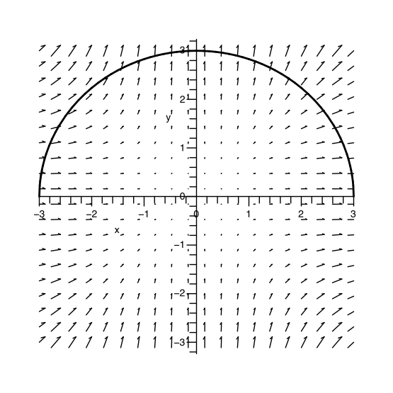
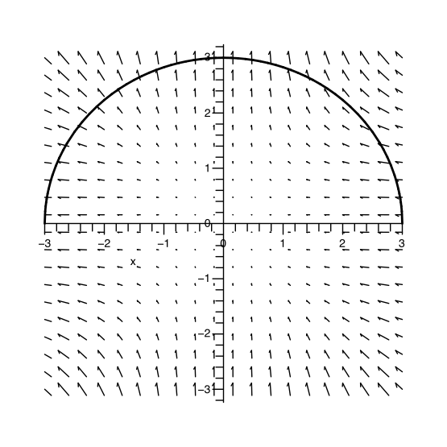
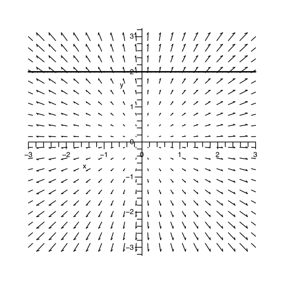
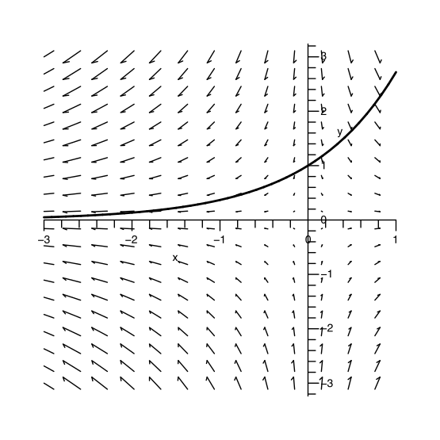

Section 5 First Set - What does the line integral of a vector field over a curve measure?
Problem 5.1.

Problem 5.2.

Problem 5.3.

Problem 5.4.

Subsection 5.1 Problem set wrap-up
- Explain in your own words what the line integral of a vector field over a curve measures.
- If \(\int_{C} \vec{F}\cdot d\vec{r}=0\text{,}\) is \(C\) perpendicular to \(\vec{F}\) at all points of \(C\text{?}\)